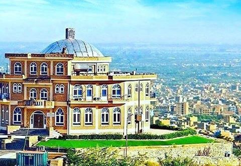
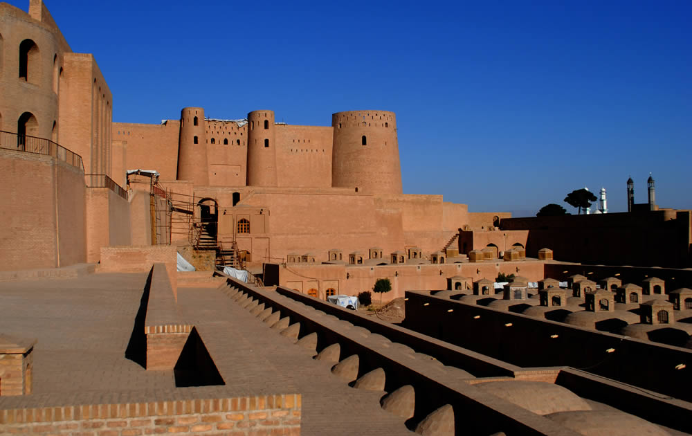
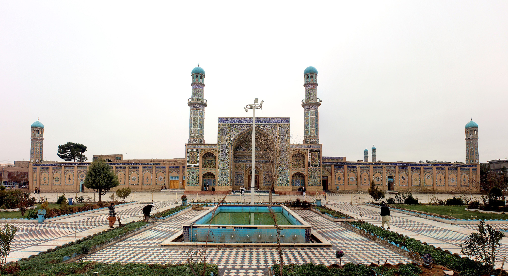

<!DOCTYPE html>
<html>
    <head>
		<title>Hompage-Scrimba</title.
	<link rel="stylesheet" href="https://cdnjs.cloudflare.com/ajax/libs/normalize/8.0.1/normalize.css">
        <link rel="preconnect" href="https://fonts.googleapis.com">
        <link rel="preconnect" href="https://fonts.gstatic.com" crossorigin>
            <link href="https://fonts.googleapis.com/css2?family=Catamaran:wght@400;600;800&display=swap" rel="stylesheet">
            <link rel="preconnect" href="https://fonts.googleapis.com">
<link rel="preconnect" href="https://fonts.gstatic.com" crossorigin>
<link href="https://fonts.googleapis.com/css2?family=Montserrat:ital@0;1&display=swap" rel="stylesheet">
        <link rel="stylesheet" href="styles.css">
    </head>
    <body>
        
        <!-- HERO SECTION -->
        <header id="main__header">
            <div class="main__header--hero">
                <h1 class="main__header--hero__title">Visit Herat</h1>
                <h2 class="main__header--hero__subtitle"> Herat is an oasis city and the third-largest city of Afghanistan</h2>
            </div>
         </header>
        <!-- ACTIVITIES SECTION -->
        <section class="activities__section">
            <div class="activity__container">
                <h3 class="activities__headline">Top Places you have to visit</h3>
                <div class="activity__items">
                    <div class="activity__card">
                         
                           <h3 class="activity__card--title">Takht-e Safar</h3>
                           <p class="activity__card--info">Takht-e Safar is a popular place for picnics. Built as a pleasure garden for Sultan Baiqara in the 14th century</p>    
                        </div>
                    <div class="activity__card">
                        
                        <h3 class="activity__card--title">Qala Iktyaruddin</h3>
                        <p class="activity__card--info">located in the center of Herat, the Qala Iktyaruddin stands as a symbol of Afghanistan’s...</p>
                    </div>
                    <div class="activity__card">
                        
                        <h3 class="activity__card--title">Masjid-i Jami</h3>
                        <p class="activity__card--info">The Masjid-i Jami of Herat was the city's first congregational mosque. It was built on a site where religious</p>
            </div>
            </div>
    </section>
        <!-- GUIDE SECTION -->
        <section class="guide">
            <div class="card__guid">
                <div class="card__guid--content">
                    <h3>Your guide</h3>
                    <p>"I have lived at Herat for over 30 years, so I can show you all of its best parts and hidden secrets."</p>
                    <h4>Sayed Hamid Yousofi</h4>
               </div>
                
            </div>
    </section>
    <footer><p>Sayed Hamid Yousofi | Scrimba Solo Project</p></footer>
    </body>
</html>